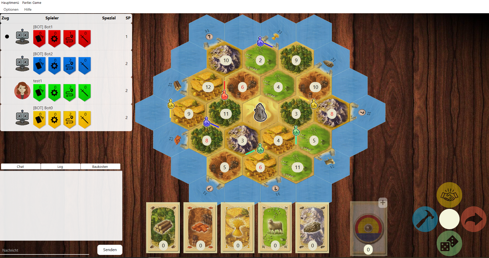

Java basiertes Uni Projekt
Über 2 Semester habe ich mit 11 weiteren Gruppenmitgliedern am Softwareprojekt der Universität Oldenburg teilgenommen. Aufgabe war es das bekannte Brettspiel die Siedler von Catan als Computerspiel zu implementieren. Als agiles Projektmanagementsystem nutzten wir Scrum in Kombination mit den Atlassian-Tools wie Jira und Confluence. Als Programmiersprache war Java festgelegt mit der wir sowohl das Backend als auch mittels JavaFX das Frontend implementierten. In über 20 Sprints haben wir so Dutzende Tickets erstellt bearbeiten und anschließend gereviewed.
Speziell die Server Client Kommunikation war zunächst neu und Einarbeitungszeit gekostet. Innerhalb des Projektes sind alle Gruppenmitglieder über sich hinaus gewachsen und haben neue Fähigkeiten erlernt. Durch gewissenhafte Dokumentation, gute Tests und produktives Pair-Programming konnten wir exzellentes Endprodukt unserem Dozenten vorstellen.
Neben einer tollen Grafik und Spieldynamik konnten wir mit Features wie Bots die aufgrund gegebener Wahrscheinlichkeit am Spiel teilnehmen Spielzüge vornehmen und mit den echten Spieler interagieren überzeugen. Persönlich habe ich mich durch dieses Projekt extrem weiterentwickelt und bin glücklich das dies mit einer 1,0 vom Professor honoriert wurde.